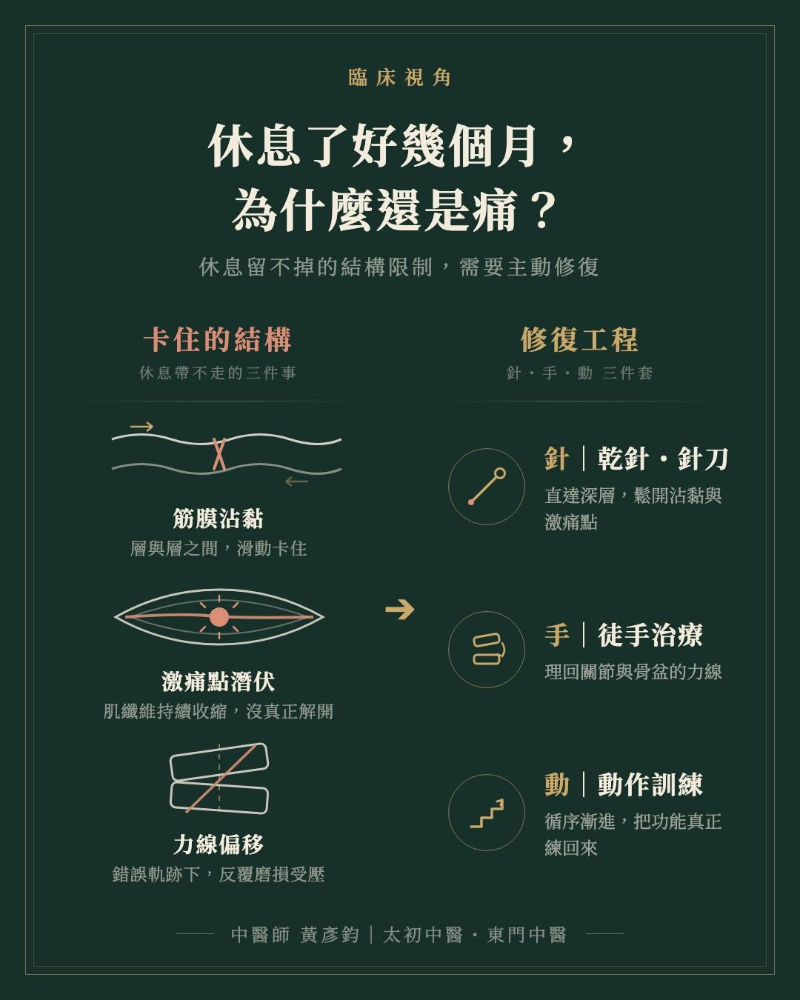
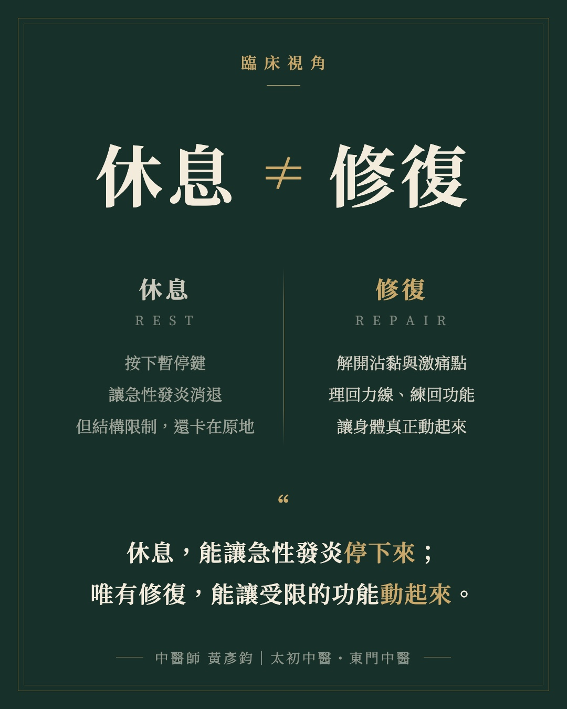

休息，不等於修復－為什麼休養了好幾個月，照樣一動就痛？
【休息，不等於修復－為什麼休養了好幾個月，照樣一動就痛？】
今天診間來了一位平時有重訓習慣的患者。評估與處理的過程中，他忍不住問了一句許多人共有的疑問：「醫師，我已經徹底『休息』這麼久了，為什麼還是不會好？」
這個問題不只出現在運動族群身上。臨床上更常見的是：許多患者明明停下所有運動、乖乖休養了好幾個月，但別說重返訓練，連日常生活裡的穿衣抬手、彎腰拿東西、上下樓梯，依然會瞬間引發疼痛。
這是一個非常核心的臨床盲點。因為對人體組織來說，「休息（Rest）」與「修復（Repair）」，從來就不是同一件事。
▍為什麼單純「休息」解不了痛？
當身體因為姿勢代償、日常耗損或訓練負荷過大而產生疼痛與拉傷，會啟動急性期的發炎反應。這時候的「休息」確實必要：它就像幫身體按下暫停鍵，停止繼續給予破壞性的壓力，讓急性發炎得以消退。
但發炎退去之後，受損或緊繃的組織並不會因為「不動」就自動排列整齊。相反地，身體為了保護受傷部位，往往會留下幾種物理層面的「結構限制」：
❶ 肌筋膜的沾黏與滑動受限：筋膜層之間失去原本順暢的滑動能力，就像衣服內裡被縫死了一角，關節只要稍微活動就會被拉扯。
❷ 激痛點（Trigger Points）的潛伏：局部肌纖維仍處在持續收縮的緊繃狀態，沒有真正解開，肌肉失去延展的空間。
❸ 關節力線的偏移與代償：骨盆與關節的排列歪斜依然存在，讓關節在日常活動中持續以錯誤的軌跡摩擦、承受壓力。
白話來說，單純的休息，只是讓身體在「完全靜止、不出力」的狀態下不發出警報；那道結構上的限制依然卡在原地。一旦開始日常的關節活動，或重新給予訓練負荷，受限的組織無法正常滑動與延展，疼痛自然反覆發作。
▍真正的「修復」：主動介入，解開結構限制
如果說休息是消極的止損，真正的修復，就需要精準的介入去打破這些物理限制。專注於徒手與針傷的中醫師，在診間做的正是這段單靠休息無法完成的修復工程：
針的部分：透過乾針或針刀，精準處理深層肌群與沾黏處，把持續收縮、不肯放手的激痛點真正鬆開，讓被卡住的筋膜空間重新打開。
手的部分：運用徒手治療，把偏移的關節與骨盆帶理回正確的力線，恢復肌肉與關節該有的張力平衡與活動軌跡。
動的部分：結構鬆開之後，還要靠循序漸進的動作訓練，讓身體在正確的軌跡上重新建立負荷能力。治療處理疼痛的源頭，訓練鞏固治療的成果，兩者缺一不可。
▍臨床思路總結
休息，能讓急性發炎停下來；唯有修復，能讓受限的功能動起來。
面對運動傷害或反覆發作的日常疼痛，如果休養了一段時間，關節活動依然卡頓、一動就痛，那通常代表身體已經過了需要「休息」的階段，需要的是一場針對解剖結構的修復，以及修復之後循序漸進的重新訓練。
踩在扎實的解剖學與生物力學基礎上，先解開結構的束縛，再把功能練回來，才是找回無痛生活與運動表現最踏實的路徑。
太初中醫診所 東門中醫
中醫師 黃彥鈞
#運動傷害 #慢性疼痛 #乾針 #針刀 #徒手治療

